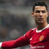
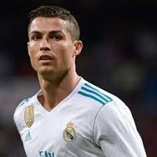
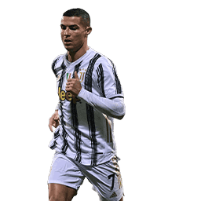
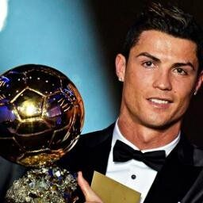

Cristiano Ronaldo dos Santos Aveiro
Cristiano Ronaldo, apodado como CR7, el bicho, el comandante o simplemente THE GOAT, es un futbolista de 38 años que actualmente juega en el Al-Nasar de Arabia Saudita. Considerado con frecuencia el mejor y más completo futbolista,así como el mayor goleador del mundo,además de uno de los mejores de todos los tiempos, es uno de los futbolistas más laureados de la historia.
Trayectoria
Sporting de Lisboa
Fue el club en el cual debuto como profesional a los 17 años en el año 2002
Manchester United
Fue contratado por el ManU en el año 2003, ganó varios titulos en los cuales destacan su primera champions y su primer balon de oro

Real Madrid
En el año 2009 fue fichado por el Real Madrid, fue el fichaje mas caro de la historia para ese momento y fue su etapa mas gloriosa como futbolista
Juventus
Para el año 2018 fue contratado por la Juventus, en ese equipo gano varios titulos pero tuvo que salir por que el equipo no tenia como mantener su alto salario
Manchester United
En el 2021 fue su segundo etapa por este club, no fue muy buena etapa ya que perdio uno de sus hijos y eso marcó su bajo rendiento

Al-Nasar
En diciembre del 2022 fue presentado en ese equipo, una gran sorpresa para muchos de sus fans

Titulos
Ronaldo ya suma 34 estrellas a nivel de clubes y selección, pues ha conquistado 5 Champions League, 1 Eurocopa, 2 Liga de España, 2 Serie A de Italia, 3 Premier League, 1 UEFA Nations League, 2 Copa del Rey, 1 FA Cup / Copa de Inglaterra, 3 Supercopa de Europa, 2 Community Shield / Supercopa de Inglaterra, 2 Supercopa de España, 2 Supercopa de Italia, 1 Supercopa de Portugal, 4 Mundial de clubes, 2 Copa de la Liga de Inglaterra, 1 Coppa Italia.
